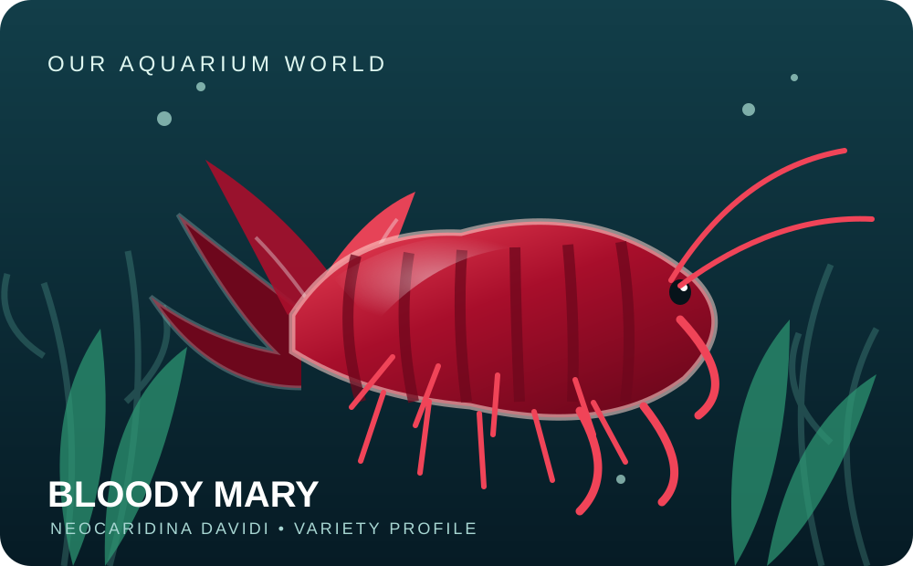
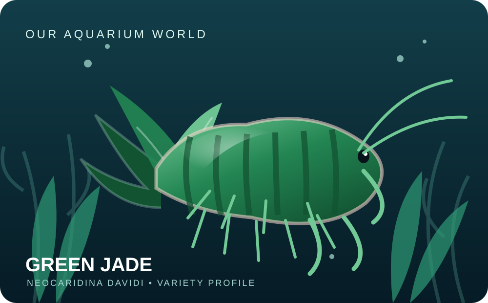
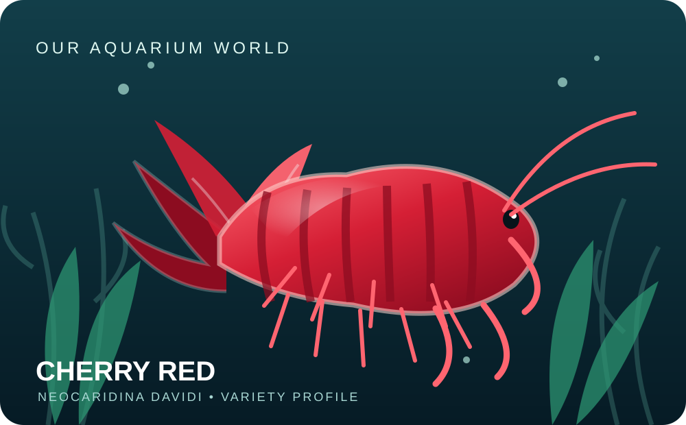
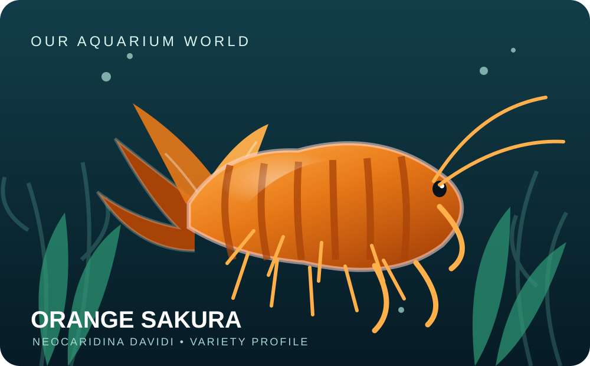
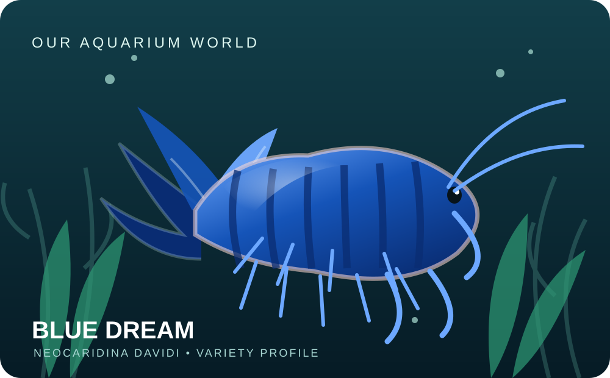
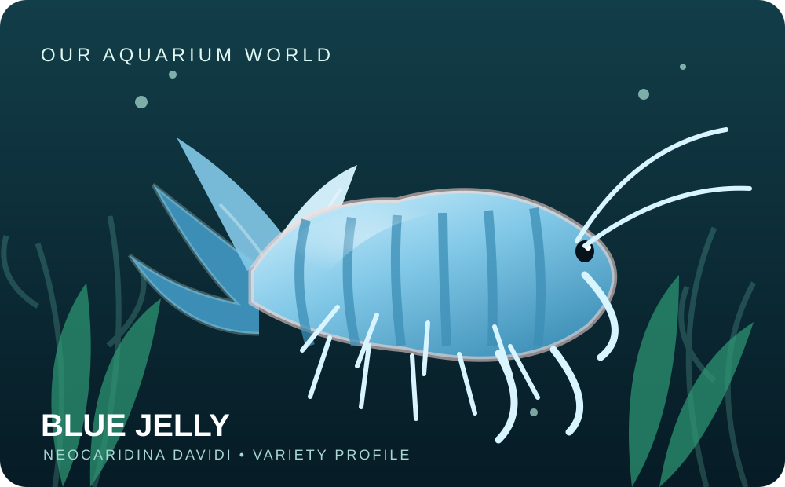
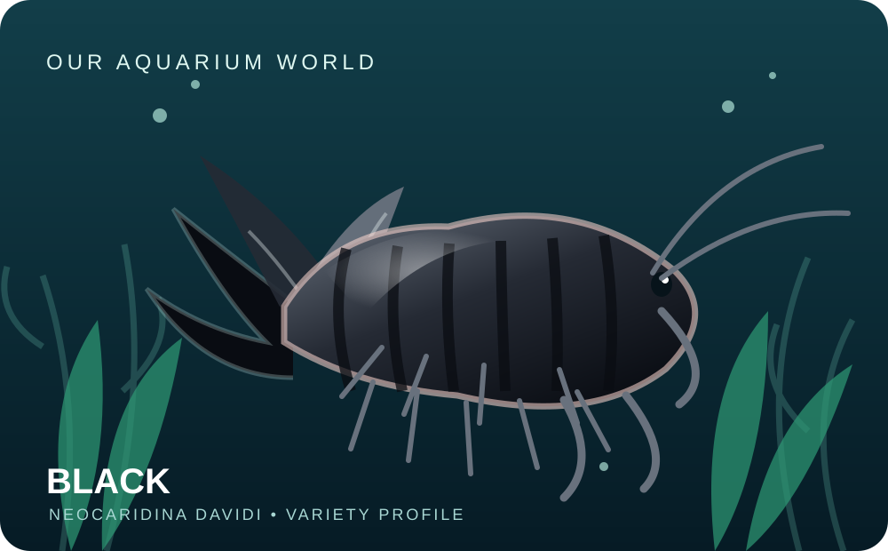
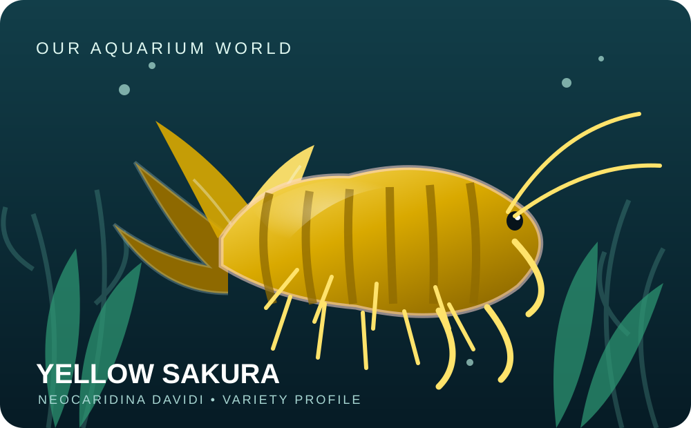

Eight colour varieties
All eight are colour morphs/lines of the same species, Neocaridina davidi. Click a variety for its dedicated profile.

Bloody Mary
A premium deep-red Neocaridina line known for rich, saturated colour and a striking appearance against green plants and dark substrate.
Neocaridina davidiAdult 2–3 cmView care & details →

Green Jade
A selectively bred green Neocaridina davidi colour morph, ranging from translucent green to deeper jade tones.
Neocaridina davidiAdult 2–3 cmView care & details →

Cherry Red
The classic red Neocaridina shrimp and one of the most popular beginner-friendly ornamental shrimp.
Neocaridina davidiAdult 2–3 cmView care & details →

Orange Sakura
A bright orange Neocaridina davidi morph selected for a vivid, warm orange colour that stands out in planted aquariums.
Neocaridina davidiAdult 2–3 cmView care & details →

Blue Dream
A popular deep-blue Neocaridina line. High-quality specimens display a rich, even blue that contrasts beautifully with green aquatic plants.
Neocaridina davidiAdult 2–3 cmView care & details →

Blue Jelly
A pale, translucent ice-blue Neocaridina morph, prized for its delicate blue-white appearance.
Neocaridina davidiAdult 2–3 cmView care & details →

Black Neocaridina
A dark Neocaridina colour selection with a dramatic appearance, especially over light sand or bright green moss.
Neocaridina davidiAdult 2–3 cmView care & details →

Yellow Sakura
A cheerful yellow Neocaridina davidi morph, ranging from golden lemon to rich yellow, with Sakura selections showing stronger colour coverage.
Neocaridina davidiAdult 2–3 cmView care & details →
Photography is representative of Neocaridina and colour morphs; some reference images may not depict the exact commercial line or grade. Image credits and licences are available on Wikimedia Commons file pages.
← HomeWhatsApp: +971 58 571 6891
Email: athertherealtor2.0@gmail.com
Address: Liaquatabad Birds Market, Karachi, Pakistan